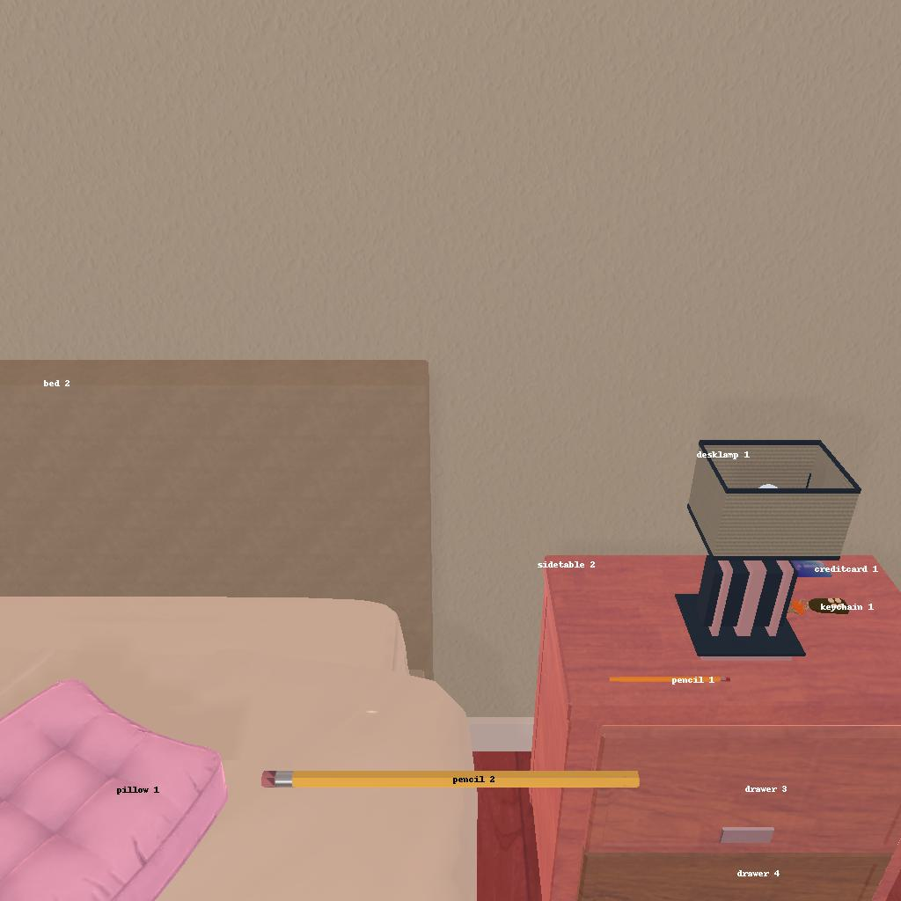
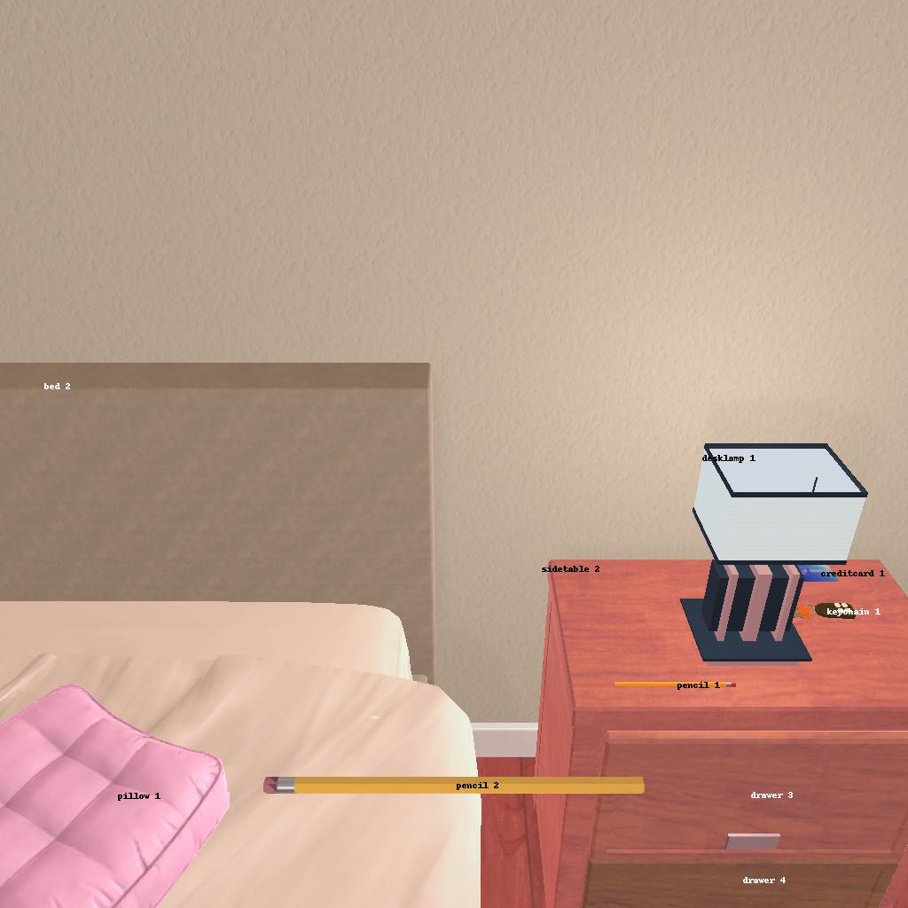

---------------------------------------------------------task: 2---------------------------------------------------------
--------------------------------------------------------------------------------------------------------------------------------------------------------------------
--------------------------------------------------------------------------------------------------------------------------------------------------------------------
Step:--------------------------------------------------------------------------12-------------------------------------------------------------------------------
----------------------------------------
VLM Prompt:
Image1:
Image2:
Image3:
**Instruction**
1. Analyze the provided image to identify all visible household objects, focusing on those relevant to the task description "examine the pen with the desklamp."
2. Use the analysis of the image and the task hint "The agent must find an object of the desired type, locate and turn on a light source with the desired object in-hand." to answer the question: what is the most reasonable action in the choices for the task description "examine the pen with the desklamp"?
4. Decide and write the answer using the template: The answer is: (i): , where i is the real number. If there is no desired object in the image, search every place based on **Initial Observation** to find the object. And if no one is exactly correct, choose a similar answer.
**Initial Observation**
You are in the middle of a room. Looking quickly around you, you can see bed (1-2), dresser (1), drawer (1-11), sidetable (1-2), desk (1), garbagecan (1), safe (1)
**Answer Choices**
(1): go to bed 1
(2): go to dresser 1
(3): go to bed 2
(4): go to drawer 1
(5): go to sidetable 1
(6): go to drawer 2
(7): go to drawer 3
(8): go to drawer 4
(9): go to desk 1
(10): go to garbagecan 1
(11): go to drawer 5
(12): go to drawer 6
(13): go to drawer 7
(14): go to drawer 8
(15): go to drawer 9
(16): go to drawer 10
(17): go to drawer 11
(18): go to safe 1
(19): put pencil 2 in/on sidetable 2
(20): use desklamp 1
(21): examine pencil 2
(22): examine sidetable 2
**Answer**
Let's think step by step by following the instructions.
----------------------------------------
----------------------------------------
Original Response:
The task description is "examine the pen with the desklamp." From the initial observation, we know that there are multiple objects in the room, but we must focus on the pen and the desklamp for this specific task.
In Image 1, we can see a sidetable (sidetable 2) with a desklamp (desklamp 1), a credit card (credit card 1), a keychain (keychain 1), and two pencils (pencil 1 and pencil 2). Since the task mentions a "pen," we can assume that the pencils are the objects of interest because there is no pen visible in the image. The task also requires us to locate and turn on a light source with the desired object in-hand, which means we need to interact with the desklamp and one of the pencils.
Given the answer choices, the most reasonable action to accomplish the task of examining the pencil with the desklamp would be to first take one of the pencils and then use the desklamp to examine it.
However, none of the answer choices explicitly state "take pencil 2" or a similar action that would allow us to pick up the pencil. Since the pencil is already on the sidetable where the desklamp is located, the closest action we can take that aligns with the task is to use the desklamp.
The answer is: (20): use desklamp 1
----------------------------------------
----------------------------------------
>>> Refine Original VLM Response and Get Pure Action: use desklamp 1
----------------------------------------
-----------------------------------------------------------------
Running time: 23.537026405334473 seconds
Total Money: 1.13864
-----------------------------------------------------------------
-----------------------------------------------------------------
Text Observation:You turn on the desklamp 1.
-----------------------------------------------------------------
SUCCEED